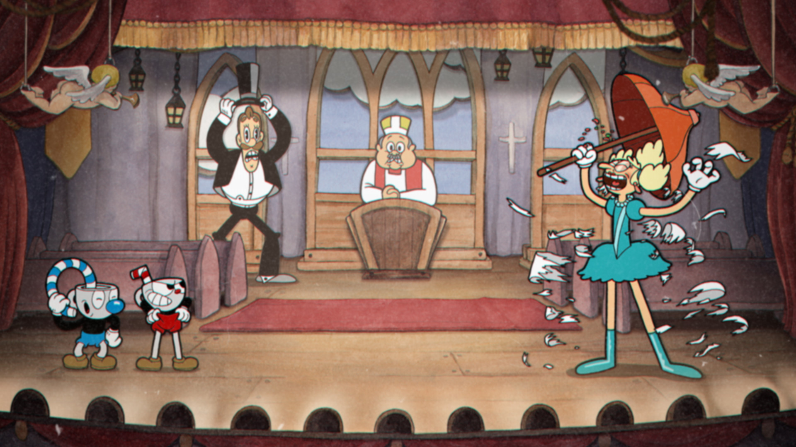

Videojuegos Actuales
-
Cuphead
Se trata de uno de los mejores juegos indie del mercado ya que su propuesta mezcla a la perfección acción, plataformas y elementos propios de los soulsborne.
 -
Shovel Knight
Es un juego de acción y plataformas también independiente que cuenta con una estética retro basada en los 8 bits financiado con tan solo 50.000€ en Kickstarter.
-
Super Smash Bros Ultimate
Este juego de lucha es uno de los tantos sucesores espirituales de Street Fighter 2 y Mortal Kombat y que mantienen vivo el género en la actualidad. Ultimate recoge a los mejores personajes de los videojuegos en uno de los títulos de lucha más completos que ha tenido Nintendo hasta la fecha.

-
Rayman Legends
Ubisoft ha sabido recoger la esencia de la saga, del género y adaptarlo a los tiempos que corren. Todo esto combinado con unos grandes diseños de escenarios y plataformas, hacen que Rayman Legends se haya ganado el puesto a pulso.
-
Mario Kart 8 Deluxe
Alejándose de los simuladores de carreras y coches como Forza Horizon 5, Forza Motorsport 7 o Gran Turismo 7, Mario Kart 8 Deluxe es una gran juego arcade de coches con el que podrás disfrutar de lo lindo solo o con amigos.